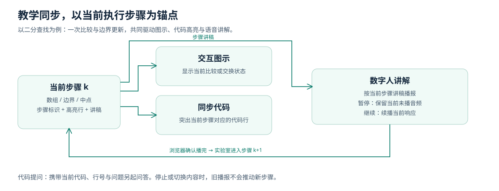

MAIR · DIGITAL HUMAN
算法实验室里的数字人助教
DIGITAL HUMAN · ALGORITHM LAB
看见算法的每一步，听懂代码的每一行
把交互图示、同步代码和数字人放在同一个学习场景里。围绕当前执行步骤讲解，遇到不理解的代码随时追问。
同一步骤 · 图示与代码联动与模拟课堂共用语音链路5 项功能 · 5 段演示
MAIR · DIGITAL HUMAN
进入与开讲
观看重点 · 实录 14.2 秒 从专题目录选择题目，点击完整讲解，数字人随即进入当前算法的教学场景。
从专题目录进入题目，开启数字人助教。
从专题目录选择题目，点击完整讲解，数字人随即进入当前算法的教学场景。
- 按算法专题组织题目，快速找到学习内容。
- 完整讲解把当前步骤串联为连续的学习过程。
专题选题完整讲解学习入口
MAIR · DIGITAL HUMAN
图示与代码同步
观看重点 · 实录 18.9 秒 推进算法步骤时，交互图示与代码高亮同步更新，数字人围绕当前状态讲解。
看清每一步，听懂每一行。
推进算法步骤时，交互图示与代码高亮同步更新，数字人围绕当前状态讲解。
- 讲解围绕当前演示状态，不执行学生提交的代码。
- 当前讲解播放完成后，完整讲解自动推进到下一步。
交互图示代码高亮步骤同步
MAIR · DIGITAL HUMAN
暂停与续播
观看重点 · 实录 14.2 秒 暂停时保留当前讲解进度，继续后接着学习，完整讲解仍会推进后续步骤。
停下来思考，再接着往下讲。
暂停时保留当前讲解进度，继续后接着学习，完整讲解仍会推进后续步骤。
- 思考与听讲可以随时切换，学习节奏由学生掌握。
- 继续讲解保留完整讲解模式，无需重新开启。
保留进度继续讲解自主节奏
MAIR · DIGITAL HUMAN
当前代码追问
观看重点 · 实录 8.9 秒 结合当前代码和高亮行提出问题，让数字人解释关键操作背后的原因。
把“这里为什么”带回当前代码。
结合当前代码和高亮行提出问题，让数字人解释关键操作背后的原因。
- 模型收到当前代码、行号和学生的问题。
- 回答仍经同一条语音与数字人播放链路输出。
代码上下文针对性追问语音回答
MAIR · DIGITAL HUMAN
音色与语气
观看重点 · 实录 11.6 秒 选择适合自己的教师音色与讲解语气，课堂和算法实验室共用设置。
同一位助教，适合不同的听讲习惯。
选择适合自己的教师音色与讲解语气，课堂和算法实验室共用设置。
- 音色切换需要重建语音连接，先停止讲解。
- 语气用于后续段落；固定步骤讲稿保持原文。
教师音色讲解语气共用设置
MAIR · DIGITAL HUMAN
统一语音，连接两种教学场景
 实时语音链路示意：课堂与算法采用不同教学上下文，同一份音频驱动声音与口型。人物为概念插画。
实时语音链路示意：课堂与算法采用不同教学上下文，同一份音频驱动声音与口型。人物为概念插画。MAIR · DIGITAL HUMAN
统一语音架构
 图 1 · 统一语音架构 模型语音是口型驱动的输入。数字人模式只播放 WebRTC 音轨，避免浏览器再播一份原始音频。 查看原图 ↗
图 1 · 统一语音架构 模型语音是口型驱动的输入。数字人模式只播放 WebRTC 音轨，避免浏览器再播一份原始音频。 查看原图 ↗MAIR · DIGITAL HUMAN
教学步骤同步

图 2 · 教学步骤同步 图示、高亮行与讲解共享步骤标识，播放完成确认驱动后续推进。 查看原图 ↗MAIR · DIGITAL HUMAN
关键设计，让讲解与学习节奏一致
01 / CONTEXT同一步骤，共同上下文
步骤状态提供图示、代码行和讲稿。比较、交换、更新边界等操作都落在具体步骤上，让讲解对应每一次具体的状态变化。
02 / VOICE声音与口型使用同一份音频
步骤讲稿交给 Qwen 朗读，代码问答使用同一实时语音连接；同一份 PCM 音频进入 LiveTalking，同时驱动声音与口型。
03 / CONTROL讲完，再走到下一步
完整讲解等待浏览器的媒体完成回执再推进。暂停保留当前未播音频；停止或切换内容则废弃旧播报。